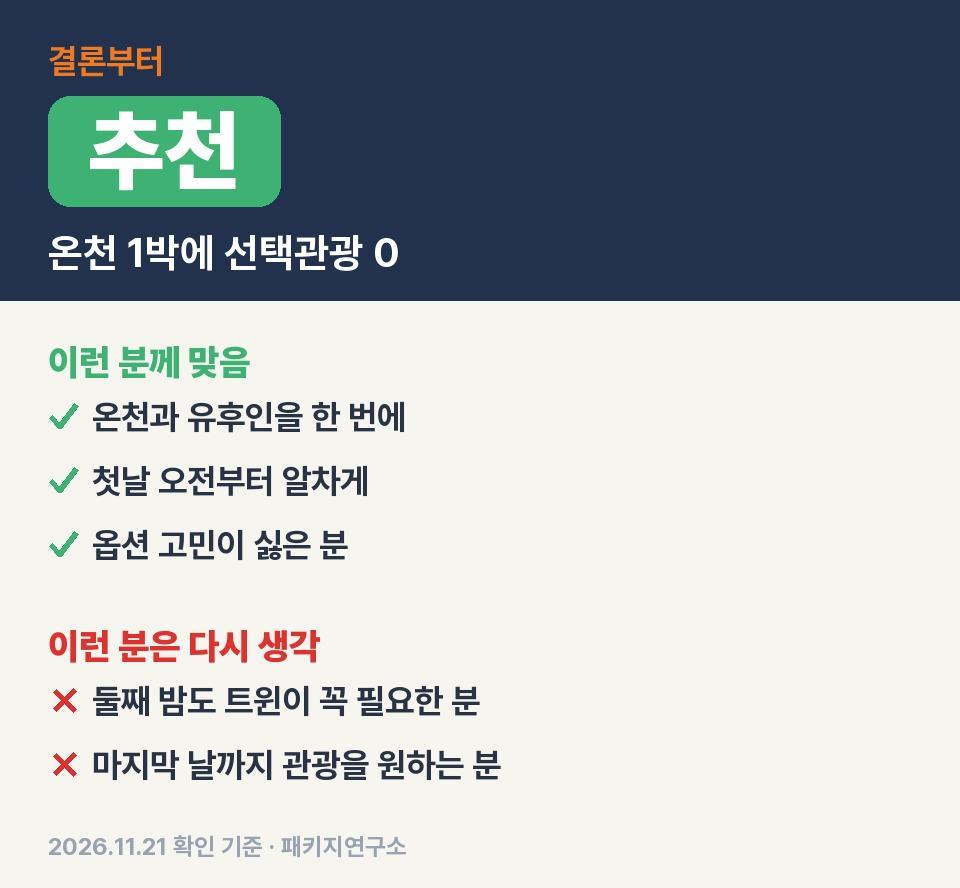
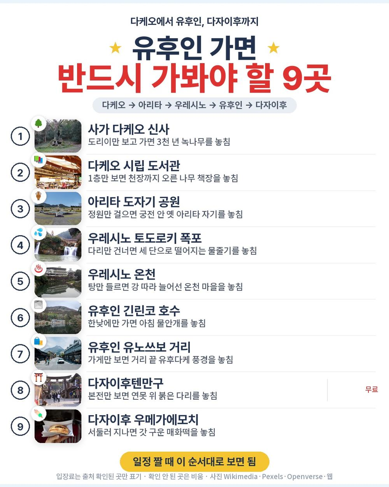
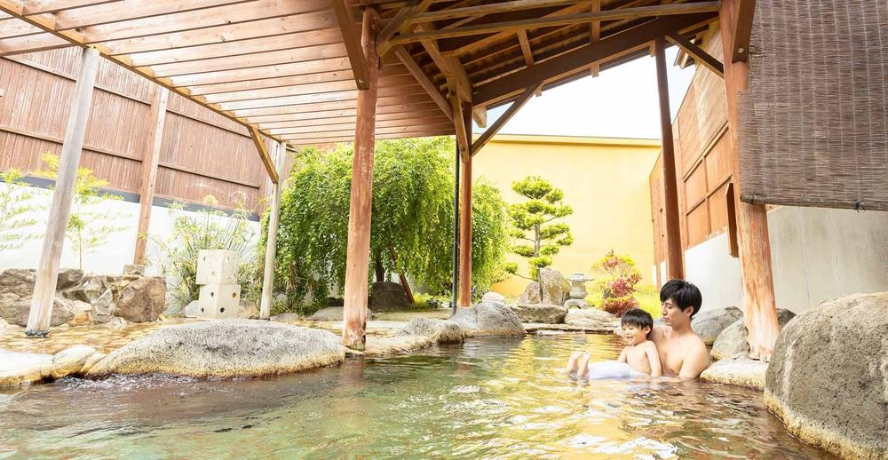
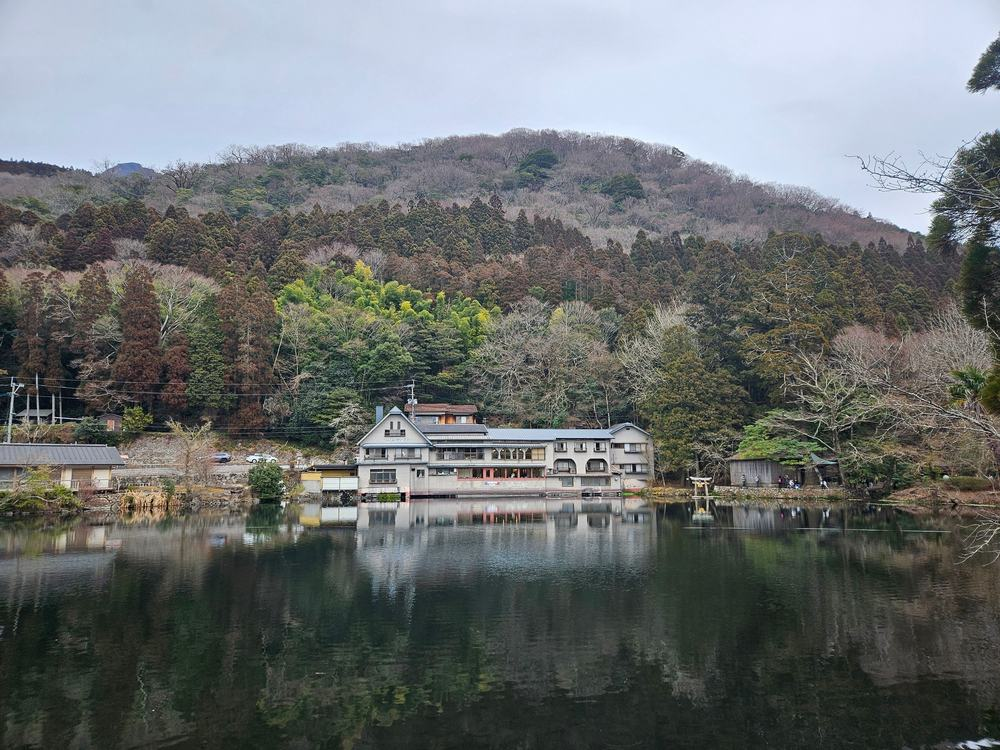
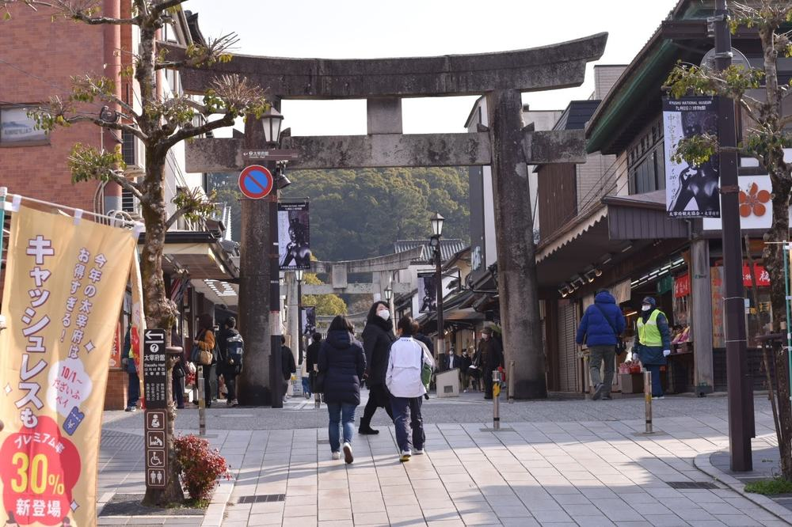

첫날 밤을 일본 3대 미인온천으로 꼽히는 우레시노에서 묵고, 다음 날 유후인 긴린코와 다자이후텐만구까지 도는 2박 3일임.
다녀온 후기가 아니라 모두투어 일정표와 포함·불포함 원문을 한 줄씩 따져 본 글임.
결론 — 추천. 트리니티항공 사가 직항 왕복, 온천호텔 1박 + 시내 호텔 1박, 식사 5번, 다케오·아리타·유후인·다자이후가 49만 9천원 안에 있고 선택관광은 0. 다만 둘째 밤에도 트윈 침대가 꼭 필요한 분은 다시 따져 볼 것.

오늘 기준 출발일별 요금 보기
https://naver.me/FQuBIJvh

| 항목 | 내용 |
|---|---|
| 가격 | 1인 499,000원 (성인·소아 같음 · 12월 출발 기준) · 2인 998,000원 |
| 여행사 | 모두투어 |
| 항공 | 트리니티항공 직항 (TW285·TW286) · 갈 때 08:25 출발 약 1시간 45분 / 올 때 10:50 출발 12:20 인천 |
| 숙소 | 우레시노 온천호텔 1박(우레시노칸 등 4곳 중 예정) + 이마리 시내 호텔 1박(이마리 그랜드 호텔 또는 AZ호텔 도스 예정) |
| 일정 | 2박 3일 · 식사 5번 · 선택관광 0 · 쇼핑 1회 · 가이드·기사 경비 3,000엔 별도 |
▶ 내 출발일 오늘 기준 요금 확인 (제휴 링크 · 예약 시 수수료를 받으며 가격은 같습니다)
▶ 11월 21일 기준 후쿠오카 패키지 최저 49만 9천원부터 — 출발일별 값 한 화면에: 비교 페이지
| 번호 | 내용 | 한 줄 답 |
|---|---|---|
| 1 | 이 값에 들어 있는 것 | 온천 1박·선택관광 0 |
| 2 | 현장에서 더 낼 돈 | 2인 6,000엔 |
| 3 | 일정과 체력 | 2일차 버스가 김 |
| 4 | 자유여행으로 짜면 | 항공값 조회 실패 |
| 5 | 맞는 분 · 안 맞는 분 | 3 대 3 |
직항 왕복과 호텔 두 밤, 식사 5번에 미인온천 하룻밤과 인솔자까지 한 값으로 묶임.
- 항공: 트리니티항공 인천–사가 직항 왕복, 유류할증료·제세금 포함
- 숙소: 1일차 우레시노 온천호텔(대욕장·노천탕·족욕탕), 2일차 이마리 시내 호텔
- 식사: 5번 — 현지식 점심 2, 온천호텔 석식 1(뷔페 또는 가이세키), 호텔 조식 2
- 관광: 다케오 신사, 다케오 시립 도서관, 아리타 도자기 공원, 토도로키 폭포, 우레시노 온천마을, 유후인 긴린코·상점거리, 다자이후텐만구
- 동행: 인천공항부터 일본 전문 인솔자(10명이 안 되면 현지 차량가이드)

다자이후에선 매화 문양 떡 우메가에모치가 간식 특전으로 들어 있음. 쇼핑은 2일차 면세점 한 번, 40분 정도이고 사는 건 자유임. 이 값에 온천 하룻밤까지 들어간 건 꽤 센 구성이라고 봄.
꼭 내는 돈은 가이드·기사 경비 1인 3,000엔이고 2일차 저녁값이 더해짐.
| 항목 | 금액 | 필수/선택 | 비고 |
|---|---|---|---|
| 가이드·기사 경비 | 6,000엔 (약 5만원) | 필수 | 1인 3,000엔 · 1엔 약 8.33원(11/20) |
| 선택관광 | 0원 | — | 없음 |
| 2일차 저녁 | 직접 | 선택 | 이마리 호텔 근처 자유식 |
| 트윈 요청 | 1인 2만원 | 선택 | 둘째 밤 · 요청만 되고 보장은 안 됨 |
| 합계 (2인 필수분) | 6,000엔 (약 5만원) | 상품가 2인 998,000원 별도 |
- 가이드 경비와 유후인 가게용 엔화 현금을 같이 챙기면 편함
- 둘째 밤 호텔 근처에 상점가 식당과 24시간 마트가 있다고 원문에 적혀 있음
버스가 몰리는 날은 우레시노에서 유후인·다자이후를 거쳐 이마리까지 도는 2일차임.
| 일차 | 가는 곳 | 버스 | 걷기 | 점심 · 저녁 |
|---|---|---|---|---|
| DAY 1 | 인천 08:25 → 사가 09:50 → 다케오 신사·도서관 → 아리타 → 토도로키 폭포 → 우레시노 | 약 2시간 30분 | 보통 | 현지식 · 호텔 석식 |
| DAY 2 | 유후인 긴린코·상점거리 → 다자이후텐만구 → 면세점 → 이마리 호텔 | 약 5시간 | 보통 | 현지식 · 자유식 |
| DAY 3 | 호텔 조식 → 사가 공항 10:50 → 인천 12:20 | 약 1시간 | 적음 | 없음 · 없음 |
- 다케오 신사 녹나무까지는 대나무 숲길을 걸어 들어감
- 유후인은 긴린코에서 상점 거리까지 걸으며 구경하는 일정
- 3일차는 관광 없이 아침 먹고 공항으로 감

첫날이 아침 8시 25분 비행기라 공항엔 이른 새벽에 나가야 함. 대신 사가에 내리자마자 오전 일정이 시작되니 첫날을 통째로 쓰는 셈임. 다녀온 분들 사이에서도 유후인 가는 버스가 좀 길었다는 말이 나옴.
이 상품 조건 한눈에 (출발일 달력·두 분 값·비슷한 상품과 비교)
https://pkg-lab.com/pkg/JKP601TWE3/?utm_source=ghpages&utm_medium=post&utm_campaign=daily
같은 목적지 다른 여행사 패키지, 쇼핑·선택관광·가이드 경비까지 비교
https://pkg-lab.com/dest/JP_10051/m/2026-12/?utm_source=ghpages&utm_medium=post&utm_campaign=daily
항공값을 오늘 조회하지 못해 합계는 안 냈고 직접 짤 때 따로 챙길 칸만 적음.
| 항목 | 금액 | 근거 |
|---|---|---|
| 인천–사가 직항 왕복 | 확인 못 함 | 2026-11-21 마이리얼트립 조회 실패 — 숫자를 지어내지 않음 |
| 온천호텔 1박 + 시내 호텔 1박 | 확인 못 함 | 날짜·호텔마다 다름 |
| 식사 | 따로 | 패키지는 5번 포함 |
| 공항 이동 | 따로 | 패키지는 전용 버스 포함 |
| 다케오·우레시노·유후인·다자이후 이동 | 따로 | 패키지는 전용 버스 |
| 여행자보험 | 따로 | 패키지는 포함 |
| 가이드 | — | 자유여행은 없음 |
- 사가 다케오에서 유후인, 다자이후까지는 현이 세 개라 대중교통으로 잇기 번거로움
- 렌터카라면 운전하는 사람이 온천과 일정을 다 떠안게 됨
- 실값은 날짜를 정한 뒤 비교하는 게 정확함

걸리는 건 둘째 밤 방 구성과 관광 없는 셋째 날이고 누구에게만 문제인지 분명함.
| 맞는 분 | 안 맞는 분 |
|---|---|
| 온천 하룻밤과 유후인·다자이후를 한 번에 보려는 분 | 둘째 밤도 트윈 침대가 꼭 필요한 분 |
| 첫날 오전부터 알차게 쓰고 싶은 분 | 마지막 날까지 관광을 원하는 분 |
| 옵션 고민 없이 인솔자와 가고 싶은 분 | 새벽 공항 이동이 힘든 분 |
이 상품 게시판 후기에선 온천물이 매끄러워 피로가 풀렸다는 말과 솥밥·뷔페 식사가 입에 맞았다는 말이 함께 나옴. 유후인 쪽 버스가 길었다는 글도 있어서, 둘째 날은 쉬엄쉬엄 간다고 마음먹으면 됨.
Q. 유후인 패키지 2박 3일 이 상품은 얼마인가요?
A. 12월 출발 기준 1인 49만 9천원, 2인 99만 8천원. 출발일마다 값이 달라서 날짜별로 확인해야 함.
Q. 선택관광이나 쇼핑이 있나요?
A. 선택관광은 없음. 쇼핑은 2일차 면세점 한 번, 40분 정도이고 구매는 자유임.
Q. 가이드 경비는 따로 내나요?
A. 냄. 1인 3,000엔을 현지에서 냄. 성인·소아 같은 금액임.
미인온천 하룻밤에 유후인과 다자이후까지 한 번에 묶었다는 점이 이 값의 이유임.
처음 규슈 온천을 가 보려는 분께 특히 잘 맞음.
출발일에 따라 값이 달라서 가시려는 날짜 요금부터 확인하시면 됨.
오늘 기준 출발일별 요금 보기
https://naver.me/FQuBIJvh
이 글에는 네이버 제휴 링크가 포함되어 있으며, 링크를 통해 예약하시면 일정 수수료를 받습니다. 가격은 동일합니다. 가격과 구성은 2026년 11월 21일 확인 기준이며 출발일에 따라 달라질 수 있습니다.
▶ 이 상품, 영상으로 보기 (유튜브)
▶ 후쿠오카 패키지 오늘 값 나란히 비교
▶ 같은 목적지 다른 여행사 패키지, 쇼핑·선택관광·가이드 경비까지 비교: pkg-lab.com